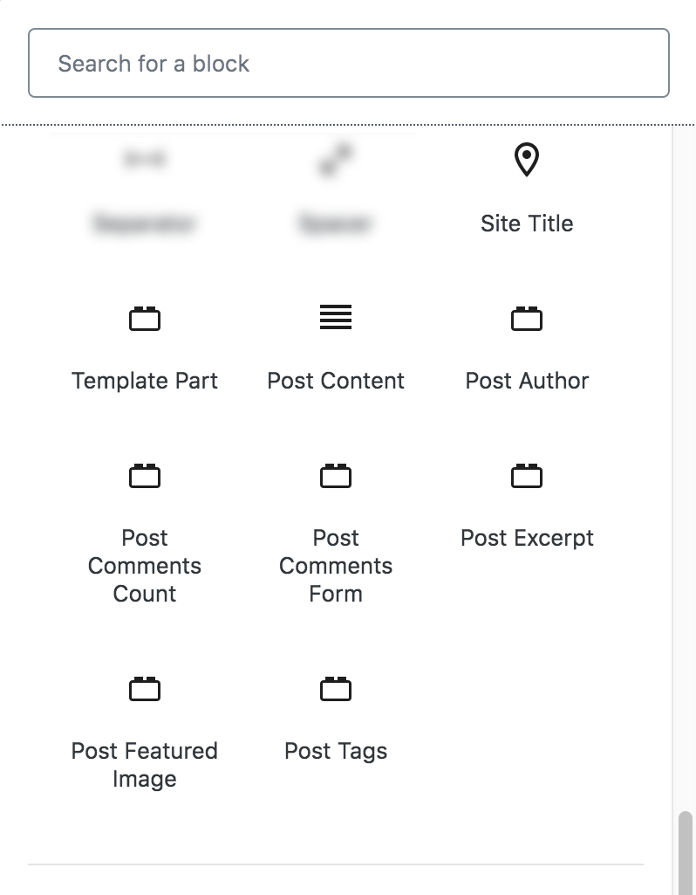
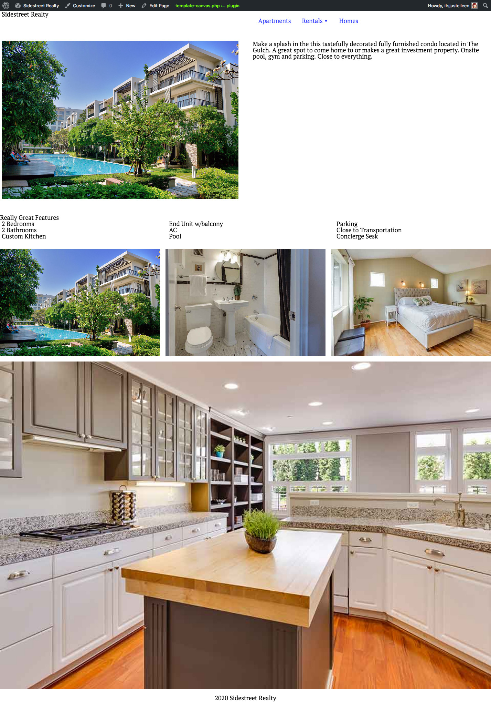

it's just eileen I’m a Design Engineer creating user experiences and interfaces for WordPress websites and products as partner/founder at Sidetrack.Studio and wpBlockShop.com where we specialize in engineering custom WordPress block solutions.
The New Frontier...
Point of View
Future of Themes
“I think that we'll always have something called themes and something like a theme directory....to users, I think it's really key that there's something called a theme that allows them to get a
head start on beautiful design that, that they don't have to start from scratch and design themselves.”
Matt Mullenweg, February 2020
Point of View
The Big Question
As this space evolves, how can we work with what is available today making our themes block enabled, while also preparing for the next generation of theme building?
Point of View
What is Gutenberg Enabled?
Any theme that takes advantage of Gutenberg Theme Supports for Block rendering in the Editor and on the Front End.
The block editor also provides opt-in opinionated styles you can access.
Theme Supports
Default Block Styles
add_theme_support( 'wp-block-styles' );
Core blocks include default styles. The styles are enqueued for editing but are not enqueued for viewing unless the theme opts-in to the core styles.
Theme Supports
Wide Alignment
add_theme_support( 'align-wide' );
Some blocks such as the image block have the possibility to define a “wide” or “full” alignment by adding the corresponding classname to the block’s wrapper ( alignwide or alignfull ).
Theme Supports
Floats
Short image caption.
The block editor adds additional markup to floated images and images with captions to make styling them easier.
Different blocks have the possibility of customizing colors. The block editor provides a default palette, but a theme can overwrite it and provide its own.
Theme Supports
Deep Dive
name is a human-readable label that appears in the tooltip and provides a meaningful color description.
slug is a unique identifier used to generate the CSS classes for the block editor color palette.
color is the hexadecimal code to specify the color.
Theme Supports
Disable Custom Colors
add_theme_support( 'disable-custom-colors' );
This flag will make sure users are only able to choose colors from the editor-color-palette the theme provided or from the editor default colors if the theme did not provide one.
Different blocks have the possibility of selecting from a list of predefined gradients. The block editor provides a default gradient presets, but a theme can overwrite them and provide its own
Themes are responsible for creating the classes that apply the gradients. To apply the gradient, implement the corresponding class.
Theme Supports
Deep Dive
name is a human-readable label that appears in the tooltip and provides a meaningful gradient description.
gradient is the CSS value of a gradient applied to a background-image of the block
slug is a unique identifier for the gradient used to generate CSS classes used by the block editor
Theme Supports
Disable Block Gradient
add_theme_support( 'disable-custom-gradients' );
When set, users will be restricted to the default gradients provided in the block editor or the gradients provided via the editor-gradient-presets theme support setting.
Blocks may allow the user to configure the font sizes they use, e.g., the paragraph block. Blocks provide a default set of font sizes, but a theme can overwrite it and provide its own.
Theme Supports
Block Font Sizes
.has-regular-font-size {
font-size: 16px;
}
Themes are responsible for creating the classes that apply the correct font size styles. The class name is built appending ‘has-‘, followed by the font size name using kebab case and ending with -font-size.
Theme Supports
Disable Block Font Sizes
add_theme_support('disable-custom-font-sizes');
When set, users will be restricted to the default sizes provided in the block editor or the sizes provided via the editor-font-sizes theme support setting.
Theme Supports
Editor styles
add_theme_support('editor-styles');
The block editor supports the theme’s editor styles, however it works a little differently than in the classic editor.
Theme Supports
Enqueuing the editor style
add_editor_style( 'style-editor.css' );
Use the add_editor_style function to enqueue and load CSS on the editor screen. For the classic editor, this was the only function needed to add style to the editor.
Theme Supports
Responsive embedded content
...
Embed blocks automatically apply styles to embedded content to reflect the aspect ratio of content that is embedded in an iFrame. A block styled with the aspect ratio responsive styles would look like.
Theme Supports
Responsive embedded content
add_theme_support( 'responsive-embeds' );
To make the content resize and keep its aspect ratio, the
element needs the wp-embed-responsive class. This is not set by default, and requires the theme to opt in to the responsive-embeds feature.
Block Templates
Block Templates
What are Block Templates?
Block Templates are a set of predefined blocks for content defined in the editor and stored in post_content.
Block Templates
Why Use Block Templates?
Block templates allow theme builders to provide the admin user with guiderails to add content.
They make it easier for the user to get content on the page by limiting the design choices they need to make.
What will applying the block experience across WordPress look like? How is this accomplished?
Block-Based Themes
Block-Based Theme Templates
Full Site Editing
Global Styles
Block-Based Themes
What is a Block-Based Theme?
A WordPress theme created with HTML files built entirely with blocks. Block-based themes are minimal html structures that provide the containers for rendering blocks in the browser.
Very different than how we create templates now, in that they do not have typical post_content.
Block-Based Themes
Theme Blocks

Made specifically for block-based themes, they provide the dynamic content areas like post_content previously displayed from the_loop.
Block-Based Themes
Theme Blocks
Post Content
Post Author
Post Comments Count
Post Comments Form
Post Excerpt
Post Featured Image
Post Tags
Full Site Editing
What is Full Site Editing?
An evolution of the editing experience allowing all areas of the site including header, footer, navigation to be edited from the Admin Dashboard. You can test it from the Site Editor Beta under the experimental flag in the Gutenberg Plugin.
Full Site Editing
Creating Block Theme Templates
1 > Create new under Appearance/Template Parts
2 > Apply styling using the editor
3 > Add block style variations and theme CSS
4 > Copy and paste code from code editor into an .html file saved in block-templates-parts folder
Full Site Editing
Progressive Enhancements
Block Theme Templates share the same naming convention as current theme structures and represent another layer on top of the current template hierarchy.
This could allow theme authors to make progressive enhancements using both html and php page templates if necessary.
Full Site Editing
More Power Mr. Scott
FSE could put a lot of design control into the hands of the user — both a positive and a negative.
Full Site Editing
Naked Template

Full Site Editing
Global Styles
Global Styles is currently in development and will allow for styling across a theme.
Full Site Editing
Caveats
Nothing is set in stone. The more we test and iterate the stronger the experience will become.